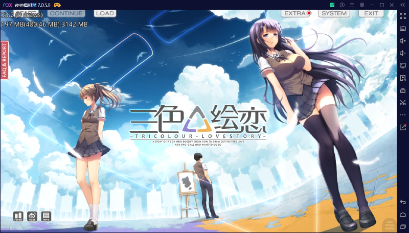

三色绘恋（krkr2）

2005年，江城的暖秋。
童年有如被铁笼囚住一般，早已自觉为灰色浸染的男孩，第一次走进名为「艺术班」的教室之中。
恰巧在同桌的位置上出现的，宛若冰山，却又似轻风薄雾的朝霞一般，紫水晶色的她……
被「他们」焚毁象征着同那女孩回忆的画卷时，在炽热的火光下啜泣的，那一抹橘色的她……
两个色彩截然不同的少女，同时伸出双手。
相会、再会、交织、着色……
来不及找到心中的那抹缤纷，男孩已经提起画笔。
「……「一起画画」啊……」
「……嘿嘿，现在是我们三个人呢……」
下载